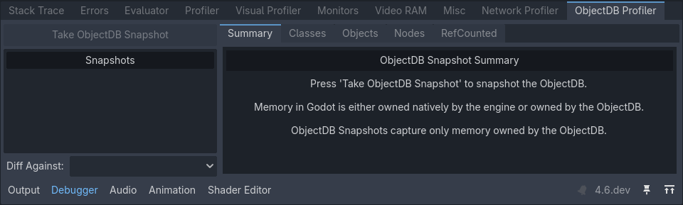
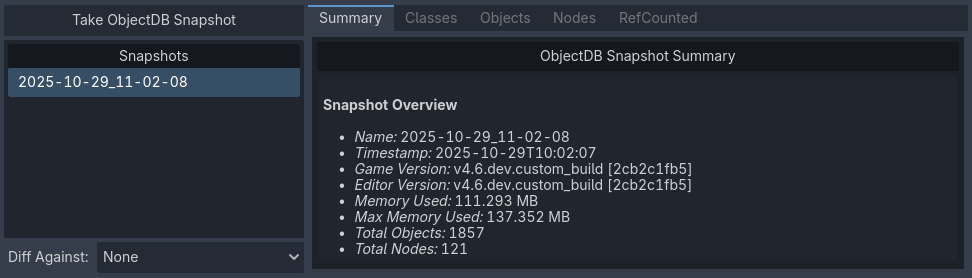
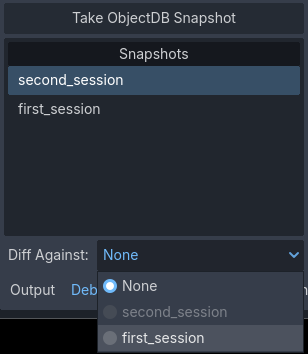
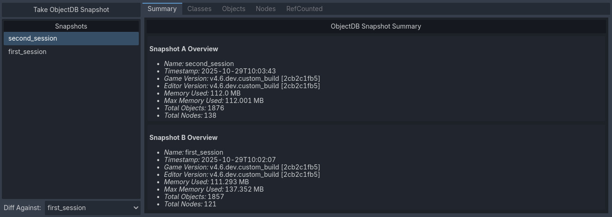
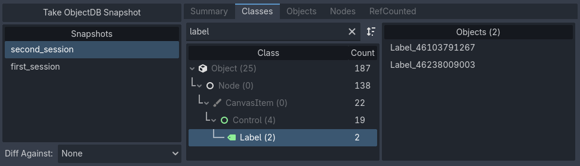
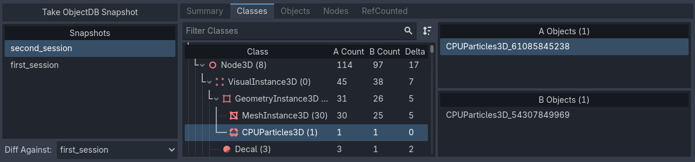
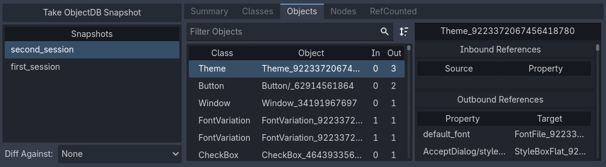
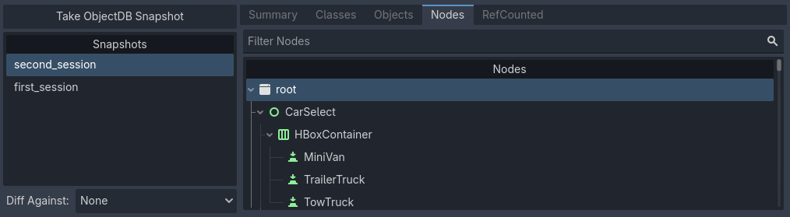
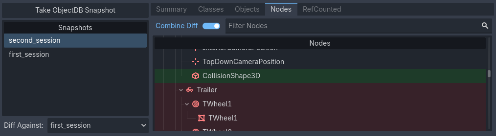
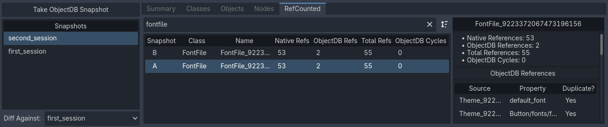

Sử dụng ObjectDB profiler
Từ Godot 4.6, có một tab ObjectDB Profiler mới trong bảng Debugger phía dưới. Profiler này cho phép bạn chụp snapshot trạng thái hiện tại của ObjectDB, tức cơ sở dữ liệu chứa tất cả các lớp dẫn xuất từ class_object đang được cấp phát trong bộ nhớ. Điều này hữu ích để phát hiện rò rỉ bộ nhớ và hiểu mức sử dụng bộ nhớ của dự án.
Ngoài ra, công cụ này có thể trực quan hóa sự khác biệt giữa hai snapshot. Điều này giúp xác định cải thiện hoặc suy giảm về mức sử dụng bộ nhớ sau khi bạn thay đổi dự án. Giảm mức sử dụng bộ nhớ có thể giúp hiệu năng tốt hơn, kể cả khi bộ nhớ không phải là điểm nghẽn. Khi giảm mức sử dụng bộ nhớ, bạn có thể thực hiện ít lần cấp phát hơn, vốn là thao tác tốn kém, đặc biệt nếu thực hiện với số lượng lớn trong lúc chơi.
Xem thêm
Xem Khi nào và làm thế nào để tránh dùng node cho mọi thứ để biết thông tin về các giải pháp thay thế nhẹ hơn cho node, giúp giảm mức sử dụng bộ nhớ trong dự án.
Cảnh báo
ObjectDB profiler không theo dõi từng chút bộ nhớ mà engine hoặc các thư viện bên ngoài sử dụng. Các lớp gốc của engine không được expose ra scripting API sẽ không xuất hiện trong snapshot.
Hãy cân nhắc dùng các công cụ profiling bộ nhớ bên ngoài nếu bạn cần những thông tin này.
Cách dùng
Mở tab ObjectDB Profiler trong bảng phía dưới. Bạn sẽ thấy trang tóm tắt khi chưa có snapshot nào.

Tóm tắt ObjectDB profiler khi chưa chụp snapshot nào
Chạy dự án, rồi đến thời điểm bạn muốn chụp snapshot (ví dụ sau khi tải một màn chơi). Nhấp để chụp snapshot tại thời điểm hiện tại. Nếu nút bị mờ, hãy đảm bảo dự án đang chạy trước.

Tóm tắt ObjectDB profiler sau khi chụp một snapshot
Bạn có thể chụp nhiều snapshot trong một lần chạy dự án. Ngoài ra, bạn có thể nhấp chuột phải vào một snapshot trong danh sách để đổi tên, hiển thị trong trình quản lý tệp hoặc xóa nó.
Mẹo
Nên đổi tên snapshot sau khi chụp để chúng có tên mô tả rõ ràng (ví dụ before_optimization, after_optimization). Dù đặt tên gì, ngày chụp snapshot vẫn được lưu trong chính tệp snapshot.
Tệp snapshot có phần mở rộng .odb_snapshot và nằm trong user://objectdb_snapshots/ (xem chi tiết tại Đường dẫn dữ liệu). Bạn có thể sao chép chúng giữa các thiết bị một cách an toàn vì chúng không phụ thuộc nền tảng.
Xem sự khác biệt giữa các snapshot
Sau khi chụp ít nhất hai snapshot, dropdown sẽ khả dụng. Tại đây, bạn có thể chọn một snapshot khác để so sánh với snapshot đang được chọn.

Dropdown Diff Against ở góc dưới bên trái của ObjectDB profiler
Khi đó, trang tóm tắt sẽ hiển thị sự khác biệt giữa hai snapshot:

Hai snapshot được so sánh trong tab Summary
Điều này cũng áp dụng cho mọi tab khác trong ObjectDB profiler, vốn sẽ hiển thị sự khác biệt giữa hai snapshot trong các cột bổ sung.
Classes
Trong tab Classes, bạn có thể xem số instance của mỗi lớp đã được tạo tại thời điểm chụp snapshot:

Một snapshot được xem trong tab Classes
Ở chế độ diff, tab sẽ hiển thị số instance của lớp cho snapshot đang chọn (cột A) và snapshot đang được so sánh (cột B). Nó cũng hiển thị chênh lệch số instance trong cột Delta.

Hai snapshot được so sánh trong tab Classes. Ở đây, cột A là second_session, cột B là first_session
Bạn có thể nhấp vào một lớp trong danh sách bên phải để xem nó trong inspector.

Một instance lớp được chọn đang hiển thị trong inspector
Mẹo
Việc xem trước instance trong inspector cũng có ở các tab khác (Nodes, Objects và RefCounted).
Objects
Tab Objects tương tự nhưng khác ở cách trình bày dữ liệu. Ở đây, mọi instance được liệt kê tuần tự thay vì nhóm theo lớp. Khi chọn một đối tượng, bạn sẽ thấy danh sách các đối tượng khác mà nó tham chiếu ở bên phải (), cũng như danh sách các đối tượng đang tham chiếu đến nó ().
Nhờ đó bạn có thể xem đối tượng theo kiểu "từ trên xuống" (xem một đối tượng tham chiếu đến những đối tượng nào) hoặc "từ dưới lên" (xem những đối tượng nào tham chiếu đến một đối tượng).

Tab Objects được dùng để xem đối tượng theo kiểu "từ trên xuống"
Trong hình trên, nhấp vào đối tượng default_font trong danh sách sẽ chuyển chế độ xem sang góc nhìn của đối tượng đó. Đối tượng này cũng được rất nhiều đối tượng khác tham chiếu, nên thực chất nó chuyển sang góc nhìn "từ dưới lên".

Tab Objects được dùng để xem đối tượng theo kiểu "từ dưới lên"
Node
Tiếp theo, tab Nodes hiển thị scene tree tại thời điểm chụp snapshot.

Tab Nodes được dùng để xem scene tree
Tab này đặc biệt thú vị ở chế độ diff, vì nó hỗ trợ hiển thị sự khác biệt giữa hai snapshot một cách trực quan hơn. Khi bỏ chọn , bạn có thể xem sự khác biệt đặt cạnh nhau.

Chế độ diff tách riêng trong tab Nodes
Khi chọn , bạn có thể xem sự khác biệt được gộp vào một cây duy nhất, với node được thêm tô màu xanh lá và node bị xóa tô màu đỏ.

Chế độ diff gộp trong tab Nodes
Ngoài ra, bạn có thể xem danh sách các orphan node (node không gắn vào gốc của scene tree) ở cuối chế độ xem dạng cây. Bạn có thể xem dễ hơn bằng cách thu gọn node gốc, vì chúng được liệt kê bên ngoài scene tree chính.

Orphan node ở cuối cây node trong ObjectDB profiler
RefCounted
Tab cuối cùng là tab RefCounted. Tab này tương tự tab Objects nhưng hiển thị số lượng tham chiếu của các lớp dẫn xuất từ class_refcounted ngay trong bảng. Bảng có bốn cột:
Native Refs: Số tham chiếu gốc của engine đến đối tượng.
ObjectDB Refs: Số tham chiếu ObjectDB đến đối tượng.
Total Refs: Tổng số tham chiếu gốc và tham chiếu ObjectDB.
ObjectDB Cycles: Số tham chiếu vòng được phát hiện.
Ở chế độ diff, snapshot B luôn được liệt kê phía trên snapshot A nếu một instance RefCounted tồn tại trong cả hai snapshot.
Danh sách bên phải hiển thị chi tiết về instance được chọn, bao gồm danh sách tham chiếu và việc chúng có bị trùng lặp hay không.

Tab RefCounted được dùng để xem các instance RefCounted
Ghi chú
Tab RefCounted không liệt kê các đối tượng dẫn xuất trực tiếp từ class_object, vì chúng không dùng cơ chế đếm tham chiếu.